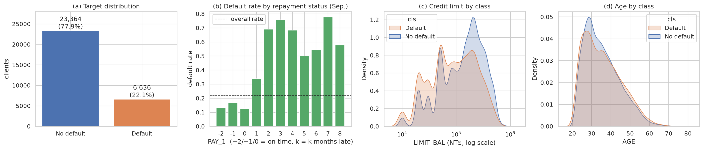
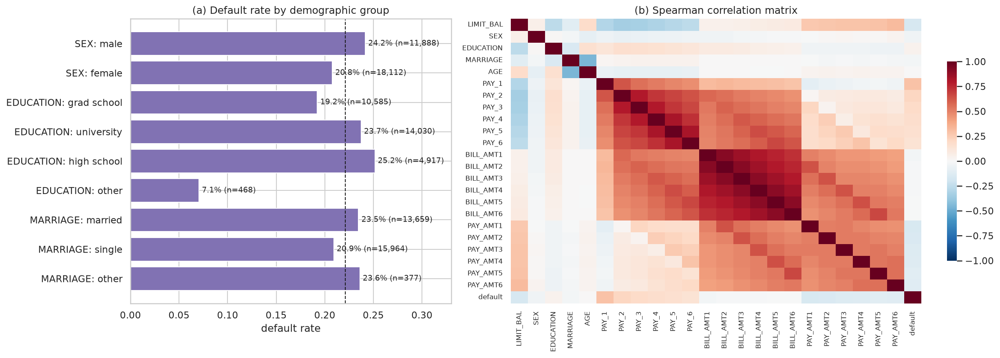
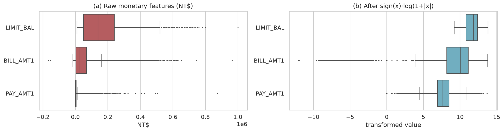
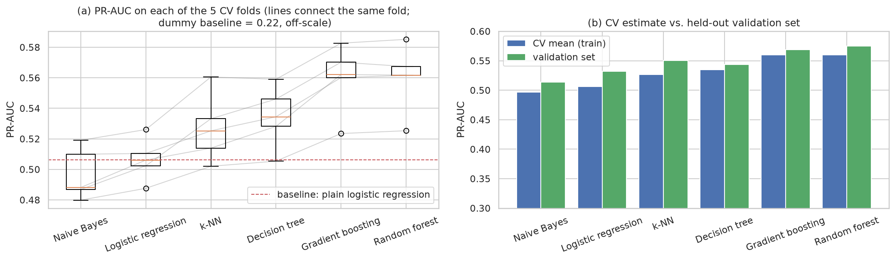
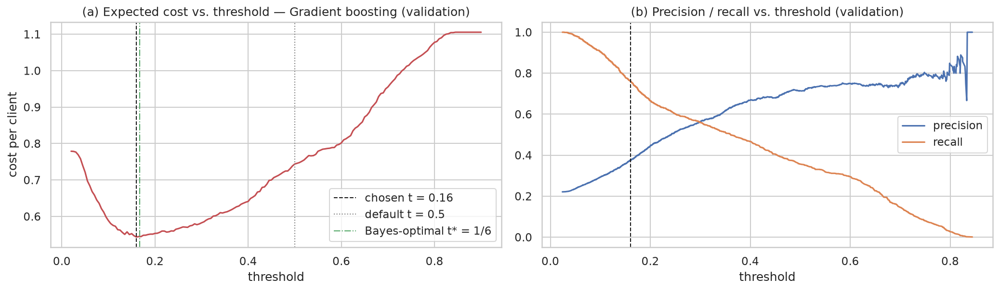
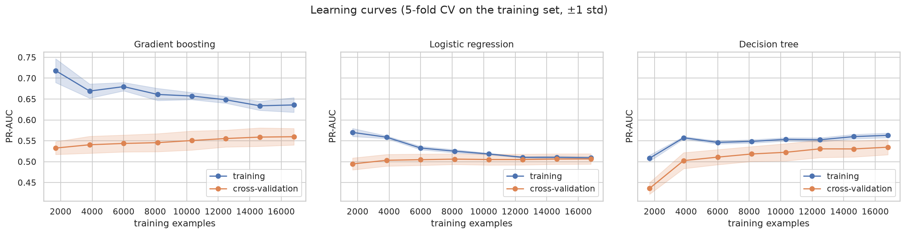
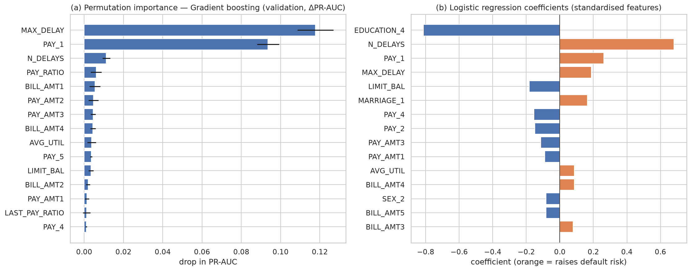
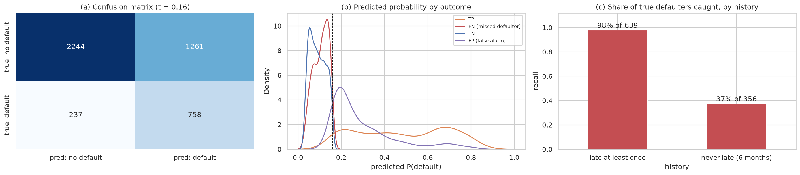
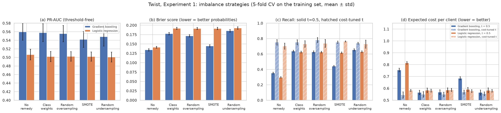
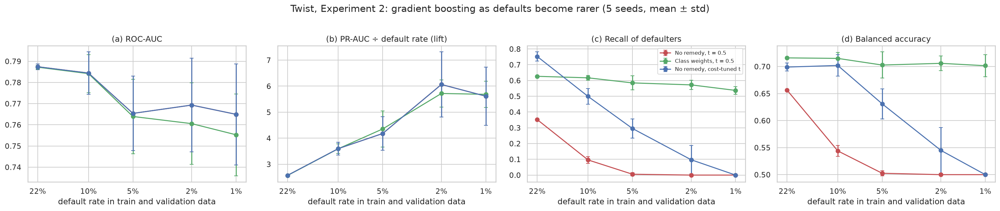

Predicting Credit Card Default: An End-to-End Machine Learning Study with an Imbalance Twist
Author: <FULL NAME> · Group: <GROUP NUMBER> ·
Course: Machine Learning, Individual Project · Date: December 2026 Code:github.com/imnvrml/credit-default-ml
(notebook credit_default_ml.ipynb reproduces every number and figure) ·
Twist: Imbalance Study
Abstract. We predict whether a credit-card client will default next month from six months of
billing and repayment history. The data are 30,000 clients of a Taiwanese bank, of whom 22.1 % default.
Six model families are tuned with identical 5-fold cross-validation and compared on PR-AUC, and the
operating threshold is chosen to minimise an asymmetric business cost in which a missed defaulter costs
five times a false alarm. Gradient boosting and random forest are statistically tied (PR-AUC 0.560 ± 0.020).
We deploy gradient boosting because it trains about 7× faster. On the untouched test set it reaches
PR-AUC 0.570 and ROC-AUC 0.781. At the cost-optimal threshold t = 0.16 it catches 75 % of defaulters and
lowers the expected cost per client by 31 % compared with a logistic-regression baseline. Error analysis
shows that 94 % of the remaining missed defaulters have a spotless repayment record, so the main limit
is the features, not the model. In the imbalance study, class weights, oversampling, SMOTE and
undersampling never improve the ranking of clients. They only shift the probabilities and spoil
calibration, while simply tuning the threshold gives the lowest cost.
1 Problem definition
Data. We use the Default of Credit Card Clients dataset [1, 2] from the UCI repository
(CC BY 4.0). It describes 30,000 clients of a Taiwanese bank between April and September 2005, with
23 features:
the credit limit LIMIT_BAL;
sex, education, marital status and age;
the monthly repayment status PAY_1…PAY_6 (−2 = no consumption, −1 = paid in full,
0 = revolving credit, k = k months late);
six monthly bill amounts BILL_AMT1…6 and six payment amounts PAY_AMT1…6
(NT$).
Task. Binary classification: will the client default on the October 2005 payment?
Why it matters and what a mistake costs. Banks use such scores to reduce credit limits, start
collection early or offer restructuring. The two errors are not equally costly:
A false negative, a defaulter treated as safe, loses part of an outstanding balance worth
tens of thousands of NT$.
A false positive costs a review call, some goodwill and some interest income.
We assume CFN = 5 · CFP. The exact ratio is a business decision.
Metrics. Accuracy is meaningless here, because always predicting "no default" already gives 78 %.
We therefore use three kinds of metric:
PR-AUC (average precision) is the primary metric for model selection. It is
threshold-free and focuses on the minority class, which makes it more informative than ROC-AUC
under imbalance [8].
The expected cost per client, (5·FN + FP)/n, is used to choose the operating
threshold.
ROC-AUC, recall, precision, F1/F2, balanced accuracy and the Brier score are reported as
supporting metrics.
For calibrated probabilities, decision theory gives the cost-optimal threshold
t* = CFP/(CFP+CFN) = 1/6 [7].
2 Exploratory analysis and preprocessing
Data quality.
There are no missing values.
EDUCATION contains undocumented codes 0, 5 and 6 (345 rows) and MARRIAGE
contains code 0 (54 rows). We merged them into the documented "other" categories. This is a fixed
recoding that learns nothing from the data, so it is safe before the split.
There are 35 exact duplicate rows. We kept them, because with 23 coarse features two genuine
clients can share a profile (e.g. both have zero bills).

Figure 1. (a) 22.1 % of clients default. (b) The default rate rises sharply with the
September repayment delay PAY_1. (c) Defaulters have lower credit limits. (d) The age
distributions are similar.
Findings.
Recent repayment status is by far the strongest signal (Fig. 1b). Clients who were on time
in September default 13–17 % of the time. Clients one month late default 34 % of the time, and
clients two or more months late about 70 %. PAY_1 has the highest Spearman
correlation with the target (0.29), followed by the earlier PAY_k (0.16–0.22),
LIMIT_BAL (−0.17) and the recent payment amounts (−0.15).
Demographic effects are weak (Fig. 2a). Age is mildly U-shaped, with the lowest rate at
25–35. The small "other" education group defaults only 7 % of the time.
The bills are strongly inter-correlated (Spearman ρ ≥ 0.73), and so are the six
PAY_k columns. This redundancy matters for Naive Bayes and for interpreting linear
coefficients.
The monetary features are extremely right-skewed (skewness up to 30). About 2 % of bills are
negative, meaning the client is in credit, and 7 % of clients owe more than their limit
(Fig. 3). These values are genuine, not errors, so we transform them rather than remove
them.

Figure 2. (a) Default rate by demographic group; the dashed line is the overall
rate. (b) Spearman correlation matrix: note the block structure among the PAY_k columns
and among the bills.

Figure 3. Heavy tails in the monetary features (a). After a signed log transform
(b), the outliers are compressed while their sign and order are preserved.
Feature engineering. We added five row-wise features. Each depends only on the client's own
row, so none of them can leak information:
MAX_DELAY: the worst delay over the six months;
N_DELAYS: the number of months the client was late;
AVG_UTIL: the mean bill divided by the limit, clipped to [−1, 3];
PAY_RATIO: the total paid divided by the total billed;
LAST_PAY_RATIO: the September payment divided by the August bill.
Split and leakage control. We made a single stratified split into 70 % train
(21,000) / 15 % validation (4,500) / 15 % test (4,500) with seed 42.
All learned preprocessing (scalers, feature selection, resamplers) sits inside
scikit-learn/imbalanced-learn pipelines, so in cross-validation it is fitted on the training
folds only.
The validation set is used only for model checks, threshold selection and error analysis.
The test set is used exactly once (Section 8).
Table 1. Preprocessing (fitted on training folds only).
Columns
Treatment
Justification
LIMIT_BAL, BILL_AMT*, PAY_AMT*
sign(x)·log(1+|x|), then standardise
heavy tails; keeps negative balances
PAY_*, MAX_DELAY, N_DELAYS
standardise, kept ordinal
codes are ordered by severity
AGE, ratio features
standardise
ratios already clipped
SEX, EDUCATION, MARRIAGE
one-hot
nominal categories
k-NN, Naive Bayes only
SelectKBest (ANOVA F), k tuned
distance dilution / independence assumption
The same 34-column representation is fed to every model to keep the comparison fair. Scaling does
not affect the trees.
3 Baseline
We use two reference points, evaluated with the same 5-fold CV as all other models (Table 3):
A dummy prior classifier scores PR-AUC 0.221 (equal to the prevalence) with recall 0 and a
cost of 1.106 per client.
A plain logistic regression with default settings scores PR-AUC 0.506 ± 0.012 and
ROC-AUC 0.759. At the default threshold of 0.5 it finds only 30 % of defaulters, at a cost of
0.812.
Every later result is read relative to these numbers.
4 Models
Table 2. Model families, why each is a reasonable candidate, and which
assumptions our data may violate.
Model
Why a candidate
Assumptions our data may violate
Logistic regression (elastic net)
Interpretable coefficients and calibrated probabilities; the industry standard for credit scoring.
Linear log-odds, while the delay effect is step-like (Fig. 1b); collinear bills, which the penalty mitigates.
k-nearest neighbours
Non-parametric; "similar clients behave alike".
That Euclidean or Manhattan distance is meaningful across 34 mixed features of very different relevance; prediction is slow.
Gaussian Naive Bayes
Very fast, with few parameters.
Conditional independence (strongly violated by the near-duplicate PAY_k and bills); Gaussian features (skewed, discrete).
Decision tree
Captures thresholds such as "≥ 2 months late"; readable.
High variance; axis-aligned splits only.
Random forest [5]
Bagging reduces tree variance; robust to outliers and scaling.
Few; correlated features share importance.
Gradient boosting (histogram) [6]
Usually the strongest model on tabular data; models interactions.
Can overfit without regularisation (we tune the learning rate, leaf size and L2).
We did not include kernel SVMs. Their training time grows roughly quadratically with the 21k rows,
which would make 100 tuning fits impractical, and a linear decision boundary is already covered by
logistic regression.
5 Evaluation and tuning
Protocol.
Every family is tuned by randomized search over 20 configurations, so all models get the
same budget.
The search uses the same stratified 5-fold CV object (seed 42) and optimises PR-AUC.
For the selected configuration we report the mean ± standard deviation over the 5 folds of every
metric (Table 3).
The search spaces and the selected hyperparameters are listed in Appendix A.
Table 3. 5-fold CV on the training set (mean ± std), at the default threshold
of 0.5 for the threshold-dependent metrics. Fit time is the mean per fit. The selected model is
highlighted.
Model
PR-AUC
ROC-AUC
Recall
Precision
F1
Cost/client
Fit (s)
Dummy (prior)
0.221 ± 0.000
0.500 ± 0.000
0.000
0.000
0.000
1.106 ± 0.000
0.05
Logistic regr. (default)
0.506 ± 0.012
0.759 ± 0.010
0.299
0.640
0.408
0.812 ± 0.013
0.11
Logistic regr. (tuned)
0.507 ± 0.012
0.759 ± 0.010
0.297
0.644
0.406
0.814 ± 0.012
1.10
k-NN
0.527 ± 0.020
0.771 ± 0.012
0.367
0.639
0.466
0.746 ± 0.015
0.09*
Gaussian Naive Bayes
0.497 ± 0.015
0.752 ± 0.007
0.542
0.481
0.510
0.636 ± 0.013
0.13
Decision tree
0.535 ± 0.018
0.771 ± 0.011
0.347
0.665
0.455
0.762 ± 0.016
0.30
Random forest
0.560 ± 0.019
0.783 ± 0.011
0.353
0.668
0.462
0.754 ± 0.012
19.4
Gradient boosting
0.560 ± 0.020
0.785 ± 0.012
0.352
0.673
0.462
0.755 ± 0.015
2.76
* k-NN "fitting" only stores the data; its cost is paid at prediction time.

Figure 4. (a) PR-AUC on each CV fold, with grey lines connecting the same fold
across models; the dashed line is the logistic-regression baseline. (b) The CV estimate agrees with
the held-out validation set (validation PR-AUC 0.51–0.58), so the tuning did not overfit the folds.
Results.
The two ensembles rank clients best (PR-AUC 0.560, ROC-AUC ≈ 0.785). That is +0.054 over
the logistic baseline and more than 2.5× the dummy.
The decision tree (0.535) and k-NN (0.527) are next. k-NN works best with only 12 selected
features and a very large neighbourhood (k = 101), which is a sign of noisy local
structure.
Naive Bayes is the weakest ranker (0.497), as expected from its violated independence
assumption. It has the highest recall at t = 0.5 only because its probabilities are
over-confident.
Tuning did not improve logistic regression (0.507 vs 0.506). The selected penalty is a pure
L1 (lasso, C = 0.2), but with 21k rows and 34 features there is little variance for any penalty
to remove. Section 6 confirms that its problem is bias.
Model selection. The fold standard deviation (≈ 0.02) is ten times larger than the
difference between the two ensembles (0.0005), and in the paired per-fold comparison gradient boosting
wins 2 of 5 folds. We fixed our selection rule in advance: among the models within one standard
deviation of the best, choose the cheapest to train. This selects gradient boosting, which
trains in 2.8 s against 19.4 s for the random forest.
Operating threshold. With t = 0.5 the selected model catches only 36 % of defaulters on the
validation set. Minimising the expected cost over thresholds on the validation set gives
t = 0.16 (Fig. 5), almost exactly the Bayes-optimal 1/6, which indicates that the model's
probabilities are well calibrated. At t = 0.16 recall rises from 0.36 to 0.76, precision falls
from 0.71 to 0.38, and the expected cost drops from 0.744 to 0.544 per client (−27 %).

Figure 5. Validation set, gradient boosting. (a) Expected cost per client as a
function of the threshold: the minimum (t = 0.16) almost coincides with the theoretical 1/6.
(b) The precision–recall trade-off.
6 Analysis and interpretation
6.1 Learning curves: bias, variance, and more data

Figure 6. Learning curves (5-fold CV on the training set, ±1 std) for the selected
model and two contrasting models.
Logistic regression is high-bias. Its training and CV scores are almost identical (0.509 vs
0.507) and flat, so more data cannot help; only more flexible models or better features can.
Gradient boosting shows moderate variance. There is a train–CV gap of 0.076 (0.636 vs
0.560). Its CV curve rose from 0.533 at 10 % of the data to 0.560, but the last step added only
0.001, so more rows of the same kind would bring small gains at best.
The decision tree benefits most from data (0.436 → 0.535).
All the curves plateau below 0.6. Together with the error analysis, this indicates that the limit is
the information contained in the features.
6.2 Feature importance

Figure 7. (a) Permutation importance of gradient boosting on the validation set
(drop in PR-AUC, 10 repeats). (b) Coefficients of the tuned logistic regression on standardised
features; orange coefficients increase the default risk.
Permutation importance [5] is computed on the raw columns through the whole pipeline, so it can be
read in the original feature space.
Gradient boosting relies overwhelmingly on MAX_DELAY (0.118) and
PAY_1 (0.094). Every other column contributes less than 0.012. This agrees with
the EDA and with credit-scoring practice: recent and severe arrears are the best predictors of
the next default.
Logistic regression uses the same evidence.N_DELAYS, PAY_1 and
MAX_DELAY increase the risk. A higher LIMIT_BAL reduces it, because
banks grant high limits to clients they already trust.
Two results are domain-implausible, and we explain rather than trust them:
The strong negative weight on EDUCATION_4 ("other") rests on only 468 clients
with a 7 % default rate.
The negative coefficients of PAY_2 and PAY_4 are an artefact of
collinearity among the six PAY_k columns, not a protective effect.
The L1 penalty set 4 of the 34 coefficients exactly to zero.
6.3 Error analysis

Figure 8. Validation set at t = 0.16. (a) Confusion matrix. (b) Predicted
probabilities by outcome: missed defaulters (FN) are indistinguishable from true negatives.
(c) Recall among defaulters with and without any delay in the last six months.
We examined the 237 missed defaulters and 1,261 false alarms on the validation set, comparing the
median profile of each outcome group and the most confident mistakes.
Missed defaulters look like model clients. They have a median PAY_1 of 0, no
delays in six months, a median limit of NT$ 160k and 24 % utilisation.
The model catches 98 % of defaulters who were late at least once, but only 37 % of
those with a clean record (Fig. 8c). 94 % of all missed defaulters were never late.
The most confident misses (predicted risk ≈ 3 %) are high-limit clients (up to NT$ 420k) who
paid in full every month.
Their probabilities overlap completely with those of true negatives (Fig. 8b), so no
threshold can separate them. Data on income, other debts or job loss would be needed.
False alarms are mostly a deliberate consequence of the cost-based threshold. 57 % of them
have past delays: at t = 0.16 the model flags 88 % of non-defaulters who were ever late. The most
confident false alarms were two months late in every one of the last six months and still
paid. Under a 5:1 cost ratio, flagging such clients is the right economic decision.
7 Twist: Imbalance study
Question. With a 22 % default rate, how much does imbalance hurt, and which remedy is best:
class re-weighting, resampling (random oversampling, SMOTE [4], random undersampling), or simply moving
the threshold? What changes when defaults become much rarer?
Experiment 1 (natural imbalance).
We use gradient boosting and logistic regression with their tuned hyperparameters.
Each strategy is evaluated by the same 5-fold CV on the training set.
Resamplers sit inside an imblearn pipeline [3], so only training folds are
resampled and every evaluation fold keeps the true distribution.
Each strategy is tested at t = 0.5 and with a cost-tuned threshold. The tuned threshold comes
from TunedThresholdClassifierCV, which uses an inner 3-fold CV within the training
fold.

Figure 9. Experiment 1 (5-fold CV, mean ± std). (a) PR-AUC is unchanged or worse
under every remedy. (b) Re-weighting and resampling spoil the probabilities (higher Brier score).
(c, d) At t = 0.5 the remedies raise recall and cut cost, but tuning the threshold of the unweighted
model achieves the same recall at the lowest cost.
Table 4. Experiment 1, gradient boosting (5-fold CV, mean; std of cost in
brackets).
Strategy
PR-AUC
Brier
Recall @0.5
Cost @0.5
Recall @tuned t
Cost @tuned t
No remedy
0.560
0.134
0.352
0.755 (0.015)
0.751
0.544 (0.027)
Class weights (balanced)
0.558
0.178
0.637
0.565 (0.019)
0.751
0.550 (0.024)
Random oversampling
0.555
0.172
0.627
0.568 (0.020)
0.781
0.549 (0.019)
SMOTE
0.542
0.145
0.442
0.685 (0.014)
0.752
0.568 (0.017)
Random undersampling
0.548
0.185
0.653
0.564 (0.022)
0.739
0.554 (0.016)
Findings of Experiment 1.
No remedy improves the ranking. PR-AUC falls slightly under every remedy, and
SMOTE hurts the most (0.542). SMOTE interpolates one-hot and ordinal delay codes into
values that never occur in reality. The same pattern holds for logistic regression (0.506 → 0.501).
The remedies work by inflating the probabilities. This is equivalent to lowering the
threshold, and the price is calibration: the Brier score rises from 0.134 to 0.17–0.19.
Threshold tuning alone gives the lowest cost (0.544) while keeping honest probabilities and
needing no synthetic data. Once each strategy's threshold is tuned, all of them reach about the
same cost. This confirms that the remedies were only ever shifting the decision boundary.
Experiment 2 (artificially stronger imbalance).
We keep all non-defaulters and subsample the defaulters in both the training and the validation
set to reach default rates of 10 %, 5 %, 2 % and 1 %, repeated with 5 seeds.
Gradient boosting is trained three ways: with no remedy at t = 0.5, with class weights at
t = 0.5, and with no remedy at a cost-tuned threshold.

Figure 10. Experiment 2 (mean ± std over 5 seeds). In (a) and (b) the "no remedy"
lines coincide, because threshold tuning does not change the probabilities. (a, b) Ranking quality
survives rarer defaults. (c, d) The decision rule breaks.
Findings of Experiment 2.
The ranking survives rarer defaults. ROC-AUC falls only from 0.79 to about 0.76–0.77,
and the PR-AUC lift over chance even grows from 2.6× to about 5–6×.
The default threshold fails. Recall at t = 0.5 collapses from 0.35 to 0.10 at a 10 %
default rate and to 0 at 5 % and below, because the model never predicts "default".
At extreme imbalance, the "right" remedy depends on the costs. At a 1 % default rate
the cost-optimal threshold flags nobody: the model cannot reach the precision above 1/6
that would justify a flag when a miss costs only 5× a false alarm. Class weights keep recall
at 0.54, but at 4 % precision (about 24 false alarms per defaulter caught) and with three
times the expected cost (0.156 vs 0.049).
"Balanced" weights implicitly assume a cost ratio equal to the class ratio, 99:1 at a 1 % default
rate. That is justified only if a missed default really costs that much.
Twist conclusion. Imbalance damages the decision rule, not the
learned ranking. The cleanest remedy is to keep the probabilities calibrated and choose the
threshold from the real costs. Re-weighting and resampling are a blunt, implicit way to do the same,
and they cost calibration. SMOTE is counter-productive on these discrete features. We therefore
deploy the unweighted model with the cost-tuned threshold.
8 Final evaluation on the test set
The selected pipeline is the tuned gradient boosting trained on the training set, with the
threshold t = 0.16 chosen on the validation set. It was evaluated once on the 4,500 untouched test
clients. The 95 % confidence intervals come from 1,000 bootstrap resamples of the test predictions.
Table 5. Test-set results.
Model / threshold
PR-AUC
ROC-AUC
Recall
Precision
F2
Bal. acc.
Cost/client
Gradient boosting, t = 0.16
0.570
0.781
0.749
0.364
0.618
0.689
0.567
95 % bootstrap CI
[0.537, 0.603]
[0.765, 0.798]
[0.722, 0.772]
[0.344, 0.385]
[0.595, 0.639]
[0.673, 0.703]
[0.536, 0.602]
Gradient boosting, t = 0.5
0.570
0.781
0.356
0.683
0.394
0.655
0.749
Baseline: plain logistic regr., t = 0.5
0.507
0.750
0.293
0.641
0.328
0.623
0.818
The test scores agree with the CV and validation estimates (CV PR-AUC 0.560 ± 0.020; validation cost
0.544), so there is no sign of optimistic selection bias. Against the baseline, the final model raises
PR-AUC by 0.063, catches 2.6× as many defaulters (745 of 995, against about 291), and lowers the
expected cost by 31 % (0.567 vs 0.818). The price is more false alarms: 1,302 flagged clients who
pay.
9 Conclusion
What we would deploy. The tuned gradient-boosting classifier with a cost-based
threshold of 0.16.
Performance: it has the best ranking (statistically tied with the random forest), and its
test-set results are close to the CV estimates.
Stability: its fold standard deviation is about 0.02, the same as every other model.
Training cost: about 3 s per fit, 7× faster than the forest.
Interpretability: its decisions are driven by sensible, explainable evidence (recent and
worst delays). Its probabilities are close to calibrated, so the threshold can be re-derived
directly if the business costs change (t* = CFP/(CFP+CFN)).
Fallback: if a regulator demands a fully transparent scorecard, the L1-regularised
logistic regression costs about 0.05 PR-AUC but every coefficient can be explained.
Limitations.
The data come from one bank in 2005, during Taiwan's credit-card debt crisis, so the default
patterns may not transfer to other times or markets.
The 5:1 cost ratio is an assumption. The threshold, though not the ranking, depends on it.
The features cannot identify defaulters with a clean history, who make up 94 % of our misses.
This is a ceiling no model tuning will lift.
We did not audit fairness across sex or age beyond descriptive rates.
The final model was trained on 70 % of the data and not refitted on train + validation, so that
the validation-chosen threshold stays valid. Refitting could add a little performance.
The random search covered 20 configurations per model. A larger budget might separate the two
ensembles, but they are unlikely to change the conclusion given the fold noise.
Yeh, I.-C., & Lien, C.-H. (2009). The comparisons of data mining techniques for the predictive accuracy of probability of default of credit card clients. Expert Systems with Applications, 36(2), 2473–2480.
Lemaître, G., Nogueira, F., & Aridas, C. K. (2017). Imbalanced-learn: A Python toolbox to tackle the curse of imbalanced datasets in machine learning. JMLR, 18(17), 1–5.
Chawla, N. V., Bowyer, K. W., Hall, L. O., & Kegelmeyer, W. P. (2002). SMOTE: Synthetic minority over-sampling technique. JAIR, 16, 321–357.
Breiman, L. (2001). Random forests. Machine Learning, 45(1), 5–32.
Ke, G. et al. (2017). LightGBM: A highly efficient gradient boosting decision tree. NeurIPS 30. (Basis of scikit-learn's HistGradientBoostingClassifier.)
Elkan, C. (2001). The foundations of cost-sensitive learning. Proc. IJCAI, 973–978.
Saito, T., & Rehmsmeier, M. (2015). The precision-recall plot is more informative than the ROC plot when evaluating binary classifiers on imbalanced datasets. PLoS ONE, 10(3), e0118432.
Pedregosa, F. et al. (2011). Scikit-learn: Machine learning in Python. JMLR, 12, 2825–2830.
Appendix A Search spaces and selected hyperparameters
Randomized search, 20 draws per model, the same 5-fold stratified CV, scoring = average
precision, seed 42.